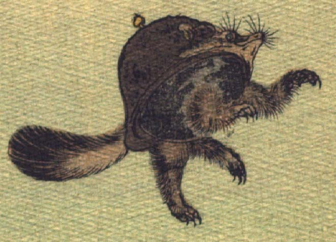

踊る文福茶釜。茶釜の正面中央がタヌキの顔になっている。突き出た鼻にひげが生え、目玉の上から長い眉毛が飛び出ている。茶釜に付いた取っ手が耳のように見える。茶釜の後方中央からふさふさとした尻尾が生えている。底に鋭い爪を持つ4本の脚が生えている。後脚で立ち上がり、前脚を上げて踊っている。
著作者：Jules Adam／出典：親書誌：U426_nichibunken_0119：La bouillotte du bonheur／日付：2006／資源識別子：U426_nichibunken_0119_0003_0000
Copyright (c)2010- International Research Center for Japanese Studies, Kyoto, Japan. All rights reserved.